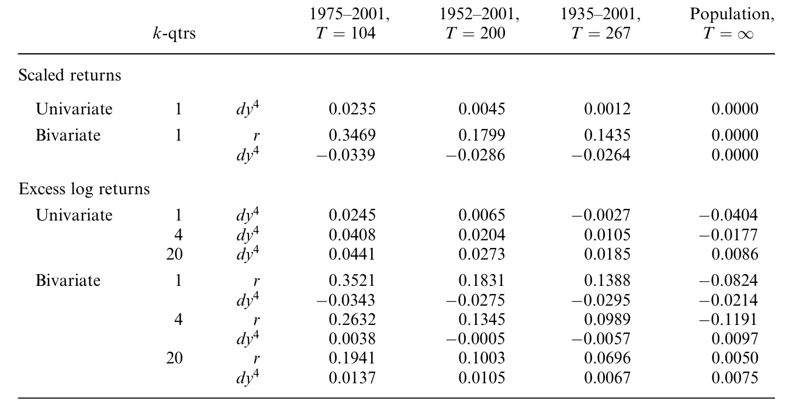
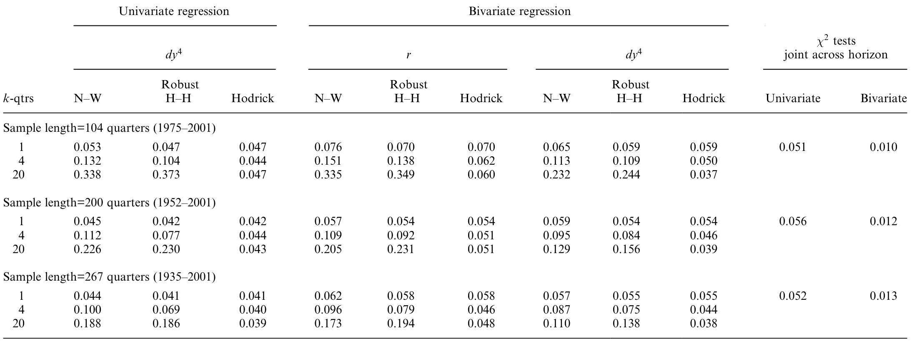
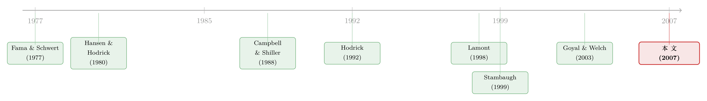

股利收益率真能预测收益吗？——一桩被「标准误」改写的旧公案
本文读的是 Ang & Bekaert (2007, Review of Financial Studies)：长期以来人们相信股利收益率（dividend yield）能强烈、且随期限越长越强地预测股票超额收益。本文把这条「常识」拆开来看，发现它在很大程度上是标准误用错了的产物——一旦改用 Hodrick (1992) 标准误，长期可预测性几乎消失；真正稳健的预测变量其实是短期利率，而且只在短期有效。
1 一条「人人都信」的预测
做资产定价的人，大概没有谁没在某门课、某篇论文里见过这样一张图：把股利收益率（dividend yield）放进回归，去预测未来的股票超额收益，斜率为正、而且期限越长、R² 越高、t 值越大。于是教科书般的结论就立住了：股价里那个会上下浮动的「分母」——预期收益——是可以被股利收益率读出来的，而且读得越远越准。
这就是 Ang 和 Bekaert 在文章开头所说的「传统智慧」（conventional wisdom）。它的逻辑链条其实很优雅。从一个无泡沫的理性定价模型出发，价格–股利比（price-dividend ratio）等于未来现金流用时变贴现率折现后的期望值。既然价格–股利比（或者它的倒数，股利收益率）会随时间波动，这个波动就只能来自三个源头之一：预期现金流增长在变、预期无风险利率在变、或者风险溢价在变。而大量文献（Campbell, 1991；Cochrane, 1992）发现，股利收益率几乎预测不了未来的股利增长——于是顺理成章地，它波动的「绝大部分」就被归给了预期收益的变化。换句话说：股利收益率高，是市场在告诉你「未来收益会高」。
这套说法太顺了，顺到几乎没人停下来问一句：那张「期限越长越显著」的图，会不会本身就是个假象？
这正是本文的切口。它不是要推翻可预测性，而是要先问一个更基础的问题——我们用来判定「显著」的那把尺子，本身准不准？
2 同一组数据，两种读数
事情的张力，从一组对照里就能看出来。
作者用美国 S&P 综合指数 1935–2001 的季度数据，跑了最经典的单变量回归：用股利收益率预测未来 k 个季度的年化超额收益。如果把样本截到 1990 年（也就是大多数早期文献所用的窗口），结果漂亮得无可挑剔：一期系数高达 0.2203（t = 2.416），四期 0.2383（t = 3.097），二十期 0.1787（t = 2.819）——无论哪个期限，t 值都在 2.4 以上，跨期限的联合检验 p 值只有 0.014。这正是 Campbell & Shiller (1988a,b) 一代人确立的「强可预测性」。
可是,只要把 1990 年代的十年加回去,同一个回归就垮了一半:一期系数掉到 0.1028(t = 1.824),四期 0.1128(t = 2.030),二十期 0.1028(t = 1.364)——除了一年期勉强擦到 5% 边缘,其余都不显著;跨期限联合检验的 p 值,从 0.014 一路飙到 0.587。
很容易把锅甩给 1990 年代那场大牛市（股利收益率被压到历史低位）。但作者提醒：他们的数据一直延伸到 2001 年底，已经把随后那段熊市的一部分也吃进去了。所以这不只是「牛市惹的祸」。
接着,一个自然的问题是:那 1935–1990 那张「全期限显著」的图,显著性到底从哪来?这里就埋着本文最关键的一步——它取决于你用的是哪一种标准误。
3 识别与推断：回归、重叠，与 Hodrick 标准误
要讲清楚这一步，得先把回归本身摆出来。本文的核心回归是：
$$\tilde{y}_{t+k} = \alpha_k + \beta_k' z_t + \varepsilon_{t+k,k}$$
其中被解释变量是累加并年化的 k 期超额收益：
$$\tilde{y}_{t+k} = \frac{\phi}{k}\big[(y_{t+1}-r_t) + \cdots + (y_{t+k}-r_{t+k-1})\big]$$
这里 \(y_{t+1}=\log(Y_{t+1})\) 是连续复利的总收益，\(r_t\) 是无风险利率，\(\phi=12\)（月度）或 \(\phi=4\)（季度）。解释变量 \(z_t\) 是对数股利收益率、无风险利率，或两者一起。
问题出在这个被解释变量身上。当 \(k>1\) 时，相邻几期的 \(\tilde{y}_{t+k}\) 用到了重叠（overlapping）的收益区间——比如二十期回归里，今天和下季度的「未来二十期收益」共享了十九期的数据。在「无可预测性」的原假设（\(\beta_k=0\)）下，这会让误差项 \(\varepsilon_{t+k,k}\) 服从一个 \(MA(k-1)\) 过程。重叠观测制造了强烈的序列相关，期限越长越严重。
于是问题变成了：怎么算标准误，才能在重叠的误差结构下不被骗？文献里的常规做法是 Hansen–Hodrick (1980) 或 Newey–West (1987)——它们的思路都是「把未来的误差往前加总」去估计协方差。Hodrick (1992) 则提供了一个反过来的、更聪明的办法：利用协方差平稳性，把回归元往过去加总，从而绕开重叠误差。具体地，参数 \(\theta=(\alpha_k,\beta_k')'\) 用 GMM 估计，其渐近分布为：
$$\sqrt{T}(\hat{\theta}-\theta) \xrightarrow{a} N(0,\Omega), \qquad \Omega = Z^{-1} S_0 Z^{-1}, \quad Z = E(x_t x_t'), \quad x_t = (1\;\; z_t')'$$
关键就在中间那块 \(S_0\) 怎么估。Hodrick 的做法是：
这个反转看起来只是技术细节，却是全文的命门。因为它直接决定了那个 t 值有多大。 作者发现：在同一份美国数据上，Newey–West 和稳健 Hansen–Hodrick 的 t 值几乎一致地高于 Hodrick t 值。用 Newey–West，1935–2001 全样本里可预测性能一路「显著」到八个季度；而用 Hodrick，全样本里 t 值过 2 的只有 2–4 季度这一小段，一期和长期都不显著。
也就是说,早期文献里那张「期限越长越显著」的漂亮图,很大程度上是 NW/HH 标准误在长期系统性低估了真实抽样误差所造出来的幻觉。把尺子换成 Hodrick,长期可预测性就蒸发了。
那凭什么相信 Hodrick 这把尺子更准，而不是另一种偏见？这就要靠下一节的蒙特卡洛体检。
4 数据
在进入体检之前，先交代数据。作者用了两套：
- 长样本：美国（S&P 综合指数，1935 年 6 月–2001 年 12 月）、英国（FT Actuaries 指数）、德国（CDAX 指数），英德两国从 1953 年 6 月起，均为季度频率，短期利率用三个月期国库券。
- 短样本（MSCI）：美、英、法、德四国，月度频率，1975 年 2 月–2001 年 12 月，短期利率用一个月期 EURO 利率。
观测单位是「国家 × 时点」，股利与盈利收益率都按过去一年加总的股利/盈利构造（季度或月度数据反而被季节性主导，不能直接用）。一个贯穿全文的事实是：这些工具变量都高度持续——美国股利收益率的一阶自相关 0.9504、短期利率 0.9548（见 Table 1 Panel A）。这种近单位根的持续性，正是小样本里检验统计量「失真」的温床，也是本文要小心处理的核心摩擦。
5 主要结果：真正稳健的，是短期利率
把尺子校准好之后，图景就清晰了。作者只报告 Hodrick t 值，得到三条结论。
第一，股利收益率单变量预测超额收益，并不稳健。 全样本下基本不显著（见上文），换到 1975–2001 的 MSCI 月度数据更彻底失效：一期系数仅 0.0274（t = 0.405）。它的「强可预测性」只在剔除 1990 年代、或截至早期样本时才出现。
第二，最稳健的预测变量其实是短期利率,而且它强烈地、负向地预测收益——但只在短期。 在 1952–2001 样本里,一期回归中短期利率系数为 −2.1623(t = −2.912),高度显著;到四期就掉到边缘,二十期完全失效。短期利率高 → 未来短期超额收益低,这条关系干净、稳定,且经得起换样本。
第三,也是最有意思的反转:股利收益率「单独」不行,但和短期利率「搭伙」就行了。 在双变量回归里,1952–2001 一期的股利收益率系数从单变量的 t = 1.541 抬升到 0.1362(t = 2.152),两者联合为零的 χ² 检验 p 值仅 0.003。也就是说,股利收益率的预测力需要短期利率来「净化」——一旦控制住利率水平,它在短期才显出独立的信息。
为了缓解只盯美国数据带来的「数据窥探」（data snooping）担忧，作者把英、法、德三国拉进来做混合估计（pooled estimation），结论一致：短期可预测、长期不可预测的格局，在国际数据里同样成立。
6 这不是「检验没力气」：一场尺子的体检
读到这里，一个尖锐的质疑会冒出来：长期不显著，会不会只是因为长期回归的样本太少、检验根本没有力气（power）？ 「不显著」和「确实没有」是两回事。
作者用第 4 节那个能匹配数据的现值模型作数据生成过程,跑了一场严格的规模(size)与功效(power)蒙特卡洛实验。结论分两层。
其一，小样本偏误确实存在——在近单位根的持续解释变量下，预测回归系数会有系统性偏差（这正是 Stambaugh, 1999 那条经典警告）。

Table 9: reports the small sample bias in several regressions based on
其二,也是更关键的一层:NW 和 HH 标准误在长期会严重「过度拒绝」原假设(名义 5% 的检验,实际拒绝率远高于 5%),而 Hodrick 标准误在小样本里能基本守住正确的规模。如表 10 所示,三种标准误在「真实拒绝率」上的差距,正是第 2 节那场幻觉的计量根源。

Table 10: reports empirical sizes for tests of a 5% nominal (asymptotic)
更重要的是功效那一边:Hodrick t 检验在本文最长样本上,5% 检验的功效超过 0.60;一旦把多国数据混合起来,即便最短样本的功效也升到 74%。这就堵死了「检验没力气」这条退路——既然功效不低,长期还是测不出可预测性,那就说明它本来就很弱或不存在,而非被噪声淹没。
（关于持续解释变量如何在长期回归里凭空「制造」出可预测性，可参见《用更多的数据，买来更大的偏差》。）
7 现值模型：股利收益率到底在反映什么？
既然股利收益率波动的大头不是预期收益，那是什么？作者构建了一个带随机贴现率、短期利率与股利增长的非线性现值模型，让它去匹配上面的实证证据，然后做方差分解。
这个模型的精神，仍是 Campbell–Shiller 式的现值恒等：股利收益率的变动可以拆给「未来贴现率变动」「未来短期利率变动」「未来股利增长变动」三块，外加它们之间的协方差项。分解结果是：
- 超额贴现率（风险溢价） 仍占大头：约
61%； - 短期利率变动 占到
22%——远比传统叙事给它的份额大； - 股利增长 只占约
7%。
换句话说，传统智慧对了一半：风险溢价确实主导了股利收益率的波动；但它漏掉了短期利率这条暗线——而这恰好解释了为什么把短期利率加进回归后，股利收益率才「活」过来。模型还复现了数据里一个反直觉的事实：高股利收益率伴随的是未来更高的利率，而非更低的股利增长。
这一节也给组合选择文献提了个醒：很多研究（如 Campbell & Viceira, 1999）直接用单变量股利收益率回归来估「预期收益」。作者用模型证明，这种代理与真实预期收益的吻合度相当差；但同时放入短期利率和股利收益率，拟合就大幅改善——尤其在短期。
最后，作者还顺手回应了 Lamont (1998) 的一个主张：盈利收益率（earnings yield）对超额收益是否有独立预测力？答案是——对收益只有微弱证据，但对未来现金流有显著预测力。这与 Bansal & Lundblad (2002)、Bansal & Yaron (2004) 强调「现金流本身遵循复杂 ARMA 过程、需要不止一个因子」的观点呼应：把信息集从股利扩到盈利，确实能更好地捕捉未来的价值相关现金流。
8 文献脉络
把这条线索摊开看，会发现本文站在两股潮流的交汇处。
第一股是「可预测性」本身的潮流。 它从 Fama & French (1988)、Campbell & Shiller (1988a,b) 确立股利收益率的预测力开始，经 Campbell (1991)、Cochrane (1992) 用方差分解把「股利收益率波动≈预期收益波动」做成共识；同时另一支（Fama & Schwert, 1977；Campbell, 1987；Breen, Glosten & Jagannathan, 1989）一直在论证短期利率才是稳健的预测变量。到了 Lettau & Ludvigson (2001)、Goyal & Welch (2003) 这一代，「加上 1990 年代后预测力消失」的质疑开始集中爆发。
第二股是「怎么做推断」的计量潮流。 Hansen & Hodrick (1980)、Newey & West (1987) 给了重叠数据的稳健标准误，Richardson & Smith (1991)、Boudoukh & Richardson (1993) 警告长期回归的统计陷阱，Stambaugh (1999) 点破持续解释变量的小样本偏误，而 Hodrick (1992) 提供了那把「向过去加总」的更准的尺子。本文的贡献，正是把这两股潮流拧在一起：用 Hodrick 的尺子，重新审判可预测性的旧公案，并给出一个能自洽匹配证据的现值模型。

它所处的位置，也预示了此后 Campbell & Yogo (2006)、Lewellen (2004)、Torous, Valkanov & Yan (2004) 等一批用「近单位根/局部到单位根」框架重做推断的工作。作者特意说明：他们不依赖这些单位根型方法，因为 Hodrick 标准误的一大优势是能直接处理多元回归元，而单位根型推断几乎只能对付单变量。
（这条「贴现率/预期收益」主线的来龙去脉，亦可参见《贴现率：资产定价的中心议题》；关于「风险溢价是否已消失」的后续争论，见《风险溢价，是「消失」了，还是「断」掉了？》。）
评论与延伸（Q&A + 研究方向）
(a) 几个可能的疑问
Q：本文是不是在说股票收益「完全不可预测」？
不是。它的论点要精细得多：股利收益率的长期可预测性多半是标准误造的幻觉；但短期仍有可预测性，且最稳健的预测变量是短期利率，股利收益率需与利率搭配才显出独立信息。可预测性「在」，只是不在人们以为的那个地方、那个期限上。
Q：Hodrick 标准误凭什么比 Newey–West、Hansen–Hodrick 更可信？
不是靠「看起来更保守」，而是靠蒙特卡洛体检。在能匹配数据的 DGP 下，NW/HH 在长期严重过度拒绝（名义 5% 的检验实际拒绝率远超 5%），而 Hodrick 在小样本里基本守住正确规模；同时 Hodrick 的功效并不低（最长样本超 0.60，多国混合达 74%）。规模对、功效够，才让人敢信它的「不显著」。
Q：长期测不出，会不会就是样本太短、功效不足？
这正是作者最用力堵的退路。功效分析显示检验有足够力气；既然有力气还测不出，就更像「本来就弱/没有」，而非被噪声淹没。这是本文比单纯换标准误更扎实的地方。
Q：为什么单看股利收益率不行，加上短期利率就行了？
因为股利收益率同时混杂了风险溢价和利率两条信息。现值模型的方差分解显示，短期利率变动占股利收益率波动的约 22%。控制住利率水平后，股利收益率剩下的那部分才更干净地对应预期超额收益——这也解释了双变量回归里它的 t 值为何被「净化」抬升。
Q：跨国数据真能缓解数据窥探吗，还是只是把同一个故事重复四遍？
部分能。各国超额收益的相关性只有 0.47–0.63，并不算高，因此混合估计在原假设下能提升效率、降低「只盯美国」的过拟合风险。但它不能完全排除全球共同的贴现率冲击带来的相关性——这是混合检验天然的局限。
Q：这与「股利收益率近似单位根」的争论是一回事吗？
高度相关但不等同。持续性（近单位根）正是小样本偏误和检验失真的来源；但本文选择用 Hodrick 标准误直接应对，而非走单位根/局部到单位根那条路，理由是后者几乎只能处理单变量，而本文的核心恰恰是双变量（利率 + 股利收益率）。
(b) 几个可能的研究问题与提案
1. 把「短期利率主导」搬到公司债超额收益上
【经济故事】本文发现短期利率是股票超额收益最稳健的短期预测变量。信用利差（credit spread）的可预测性研究里，通常更看重违约因子和流动性，短期利率/期限结构的角色相对被弱化。一个自然的问题是：在公司债超额收益里，短期利率是否同样是「最稳健、但只在短期」的那个变量？
【可行性】中。数据用 TRACE + Mergent FISD 构造公司债超额收益，宏观变量用三个月国库券与期限利差。识别上直接套用本文的 Hodrick 标准误 + 跨期限联合检验框架，难点在公司债收益的非交易日与流动性噪声需要先净化。doable，但需要谨慎处理流动性混杂。
2. 用 Hodrick 标准误重审「外资持有比例」对收益的长期预测
【经济故事】关于外资持有人与本地市场，有不少回归声称外资流入/持有比例能预测未来的本地收益或波动。这些持有比例同样高度持续，长期回归极可能落入本文揭示的标准误陷阱。
【可行性】中高。数据用各国托管/持仓面板（如 EPFR、各国央行的国际投资头寸），按本文方法做跨期限 Hodrick 检验与功效分析。识别清晰，主要工作量在持仓数据的清洗与频率对齐。
3. 现值方差分解里「短期利率那 22%」的跨国异质性
【经济故事】本文在合并/平均意义上给出贴现率 61%、利率 22%、股利增长 7% 的分解。但货币政策框架不同的国家，利率那一块的份额应当差异很大——通胀目标制国家 vs. 汇率盯住国家。
【可行性】中。需要逐国估计现值模型并做方差分解，数据可得（MSCI + 各国短期利率），识别靠模型设定。难点是模型在小样本国家的估计稳定性，结论需配合稳健性检验。
4. 「预测力随期限的形状」本身能不能当成模型检验工具
【经济故事】不同的预期收益过程（AR(1) vs. 多因子）会在「系数–期限曲线」上留下不同形状。本文已证明这条曲线在不同标准误下读数迥异。可以反过来，把（用正确标准误测出的）系数–期限曲线当作一个矩，去识别/拒绝竞争性的贴现率模型。
【可行性】中低。这是偏方法论的工作，需要把若干结构化预期收益模型映射到可观测的回归系数曲线上，再做矩匹配。理论部分不轻，但数据要求不高，适合作为一篇方法论文。
我的判断
这篇文章的贡献，不在于发现了某个新变量，而在于把「显著性」这件事本身做成了研究对象。它最漂亮的一笔，是没有停在「换个标准误、结论就变了」的层面——那样很容易被反驳为「你只是挑了对自己有利的尺子」；它继续用蒙特卡洛把规模和功效都摆上台面，证明 Hodrick 这把尺子规模正确、功效充足，从而把「长期不可预测」从一个「可能是没力气」的猜测，钉成了一个有据的结论。再叠加跨国数据和一个能自洽匹配证据的现值模型，整篇文章的说服力是层层加固的。
要说对识别的担忧，主要有两点。其一，整个功效论证依赖那个现值模型作为数据生成过程——如果真实世界的预期收益过程与模型设定有系统性偏离（比如存在结构突变，Timmermann & Paye, 2006 就强调过预测模型的不稳定性），那么「功效足够」这个结论本身也会打折扣。其二，跨国混合检验把效率的提升建立在「各国收益相关性不高」上，但这忽略了全球共同贴现率冲击可能带来的隐性相关——这会让混合检验的有效样本量被高估。
后续我最想看到的，是把这套「先校准尺子、再下结论」的纪律，系统地推广到信用市场和外资持有人的可预测性研究上——这两个领域的解释变量同样高度持续，同样充斥着长期回归，却很少有人认真做过本文这样的规模–功效体检。在那里，「Is it there?」这个问题，很可能还远没有答案。
参考文献
- Ang, A., & Bekaert, G. (2007). Stock Return Predictability: Is It There? Review of Financial Studies 20(3), 651–707.
- Bansal, R., & Lundblad, C. (2002). Market Efficiency, Fundamental Values and Asset Returns in Global Equity Markets. Journal of Econometrics 109, 195–237.
- Bansal, R., & Yaron, A. (2004). Risks for the Long Run: A Potential Resolution of Asset Pricing Puzzles. Journal of Finance 59(4), 1481–1509.
- Boudoukh, J., & Richardson, M. (1993). The Statistics of Long-Horizon Regressions. Mathematical Finance 4(2), 103–120.
- Campbell, J. Y. (1991). A Variance Decomposition for Stock Returns. Economic Journal 101, 157–179.
- Campbell, J. Y., & Shiller, R. J. (1988a). Stock Prices, Earnings and Expected Dividends. Journal of Finance 43(3), 661–676.
- Campbell, J. Y., & Shiller, R. J. (1988b). The Dividend-Price Ratio and Expectations of Future Dividends and Discount Factors. Review of Financial Studies 1(3), 195–228.
- Campbell, J. Y., & Viceira, L. M. (1999). Consumption and Portfolio Decisions When Expected Returns are Time Varying. Quarterly Journal of Economics 114(2), 433–492.
- Campbell, J. Y., & Yogo, M. (2006). Efficient Tests of Stock Return Predictability. Journal of Financial Economics 81(1), 27–60.
- Cochrane, J. H. (1992). Explaining the Variance of Price-Dividend Ratios. Review of Financial Studies 5, 243–280.
- Fama, E., & French, F. (1988). Dividend Yields and Expected Stock Returns. Journal of Financial Economics 22, 3–26.
- Fama, E., & Schwert, G. W. (1977). Asset Returns and Inflation. Journal of Financial Economics 5, 115–146.
- Goyal, A., & Welch, I. (2003). The Myth of Predictability: Does the Dividend Yield Forecast the Equity Premium? Management Science 49(5), 639–654.
- Hansen, L., & Hodrick, R. (1980). Forward Exchange Rates as Optimal Predictors of Future Spot Rates: An Econometric Analysis. Journal of Political Economy 88, 829–853.
- Hodrick, R. J. (1992). Dividend Yields and Expected Stock Returns: Alternative Procedures for Inference and Measurement. Review of Financial Studies 5(3), 357–386.
- Lamont, O. (1998). Earnings and Expected Returns. Journal of Finance 53(5), 1563–1587.
- Lettau, M., & Ludvigson, S. (2001). Consumption, Aggregate Wealth and Expected Stock Returns. Journal of Finance 56(3), 815–849.
- Lewellen, J. (2004). Predicting Returns with Financial Ratios. Journal of Financial Economics 74, 209–235.
- Newey, W., & West, K. (1987). A Simple, Positive Semi-Definite, Heteroskedasticity and Autocorrelation Consistent Covariance Matrix. Econometrica 55, 703–708.
- Richardson, M., & Smith, T. (1991). Tests of Financial Models in the Presence of Overlapping Observations. Review of Financial Studies 4(2), 227–254.
- Stambaugh, R. F. (1999). Predictive Regressions. Journal of Financial Economics 54, 375–421.
- Timmermann, A., & Paye, B. (2006). Instability of Return Prediction Models. Journal of Empirical Finance 13, 274–315.